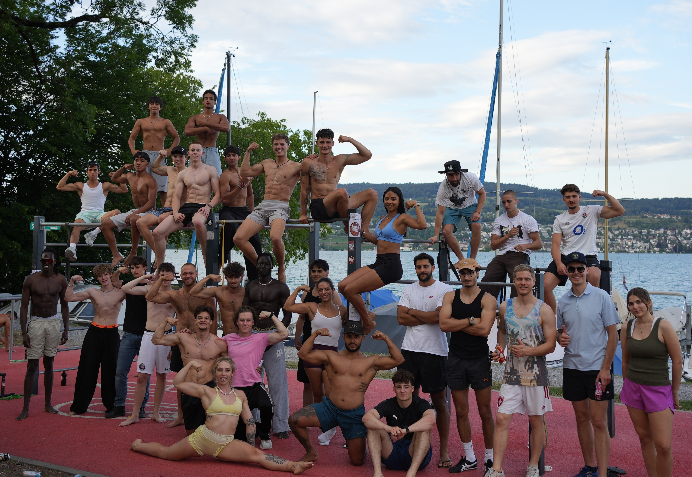

Einer der coolsten Aspekte an Calisthenics ist die Einfachheit: Du ziehst dir ein T-Shirt an, gehst in den Park und legst los. Keine teuren Maschinen, keine Verträge. Doch wer sich im Internet umschaut, sieht Athleten mit prall gefüllten Sporttaschen voller Bandagen, Gürtel und Gadgets. Braucht man das alles, um stark zu werden? Wir zeigen dir, welches Equipment dein Geld wert ist und was reines Marketing ist.
"Das beste Werkzeug im Calisthenics ist dein eigener Körper. Alles andere ist nur eine Unterstützung, kein Ersatz."
Die Must-Haves: Günstig und extrem effektiv
1. Liquid Chalk (Flüssige Kreide)
Wenn es ein Tool gibt, das in keiner Tasche fehlen darf, dann ist es Kreide. Besonders im Sommer, wenn die Stangen heiß sind und die Hände schwitzen, rutscht man schnell ab. Liquid Chalk sorgt für einen bombenfesten Grip, trocknet in Sekunden und staubt den Park nicht voll. Mehr Grip bedeutet direkt mehr Sekunden im Hang und mehr Wiederholungen beim Klimmzug!
2. Widerstandsbänder (Resistance Bands)
Egal ob Anfänger oder Profi: Bänder verändern dein Training. Einsteiger nutzen sie, um das Körpergewicht beim Klimmzug oder Dip zu reduzieren. Fortgeschrittene nutzen sie zum Aufwärmen der Rotatorenmanschette oder als Unterstützung bei schweren Skills wie der Human Flag oder der Planche. Ein Set aus 2–3 Stärken reicht völlig aus.

Die Brücke zu schweren Skills: Parallettes
Parallettes sind kleine Minibarren aus Holz oder Metall. Sie sind kein absolutes Muss für Tag 1, aber ein Gamechanger, sobald du Handstand, L-Sit oder Liegestütze intensiver trainierst. Sie verlagern den Griff in eine neutrale Position, was deine Handgelenke massiv schont und dir mehr Spielraum für die Balance gibt. Holzgriffe bieten hierbei meist den besten Grip.
Die "Kann-man-haben"-Kategorie
- Turnringe (Gymnastic Rings): Genial für das Training zu Hause oder im Wald, da man sie überall aufhängen kann. Sie machen jede Übung durch die Instabilität deutlich schwerer. Im Park mit fester Infrastruktur sind sie aber optional.
- Wrist Wraps (Handgelenkbandagen): Wenn du sehr intensiv Handstand oder schwere Dips trainierst, können sie deinen Gelenken temporär Stabilität geben. Nutze sie aber nicht dauerhaft, da deine Muskeln und Sehnen sonst verlernen, sich selbst zu stabilisieren.
Fazit: Weniger ist mehr
Lass dich nicht vom Hype anstecken. Für den Start im Park reichen Motivation und eine Flasche Wasser. Wenn du merkst, dass der Grip nachlässt oder du bei Klimmzügen feststeckst, hol dir eine Flasche Liquid Chalk und ein Widerstandsband. Das ist das einzige echte Power-Duo, das du am Anfang brauchst!